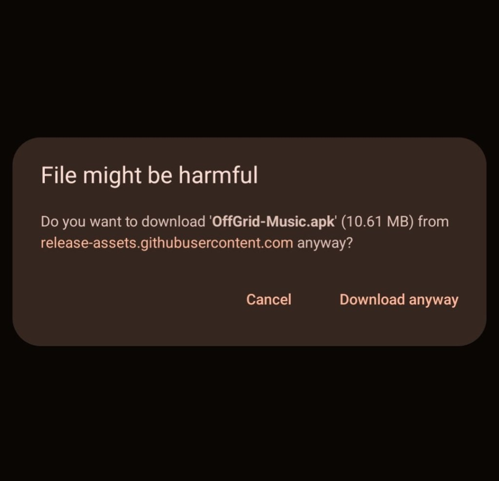
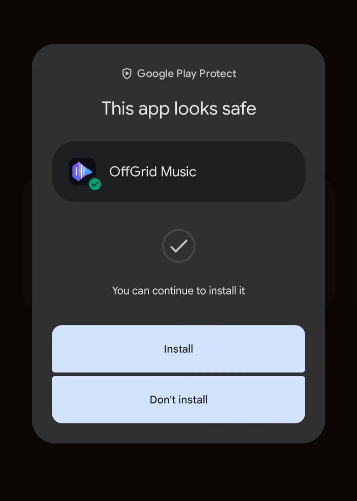

FAQ? Frequently Asked Questions
Check this to find quick answers you might be looking for — starting with step-by-step APK download, unknown sources setup, and Play Protect verification.
Priority · Download & Install Guide
How do I download and install the OffGrid Music APK on Android?
Follow these quick steps to download and install OffGrid Music safely directly from our official GitHub Release:
- Download the APK file: Tap Download Latest APK to download
OffGrid-Music.apk(~10.6 MB). - Confirm the browser prompt: If Chrome or your browser displays "File might be harmful", tap Download anyway (this appears for every APK file downloaded outside Google Play).
- Open the downloaded APK: Tap Open on the download complete notification, or open your phone's Files / Downloads folder and tap
OffGrid-Music.apk. -
Allow installing from unknown sources (one-time setup): When Android prompts you for install permission:
- Tap Settings on the dialog and switch Allow from this source ON for your browser (Chrome, Brave, Samsung Internet, etc.) or File Manager.
- Or configure it manually anytime via Android Settings → Apps → Special app access → Install unknown apps → [Your Browser / Files] → Allow from this source.
- Complete installation: Go back to the installer prompt—Google Play Protect scans the app and confirms "This app looks safe"—then tap Install. You can toggle the browser install permission off afterward if you prefer.
Priority · Download & Safety Proof
My browser says "File might be harmful" — is OffGrid Music really safe to download?
Yes — 100% safe. Every Android browser automatically shows the generic "File might be harmful" dialog whenever you download any .apk file outside the Google Play Store. It is a standard Android sideload notice, not a malware detection.
OffGrid Music downloads directly from our verified open-source GitHub Release domain (release-assets.githubusercontent.com), has zero ads or tracking SDKs, and passes Google Play Protect verification with "This app looks safe" before installation:

release-assets.githubusercontent.com and tap Download anyway.
Download & Safety
The app is not published on the Google Play Store. Is it really safe to use?
Download & Safety
If I use Google Sign-In, will my data get stolen?
Account & Backup
In what ways can I sign in to OffGrid Music?
Account & Backup
What data is backed up when I sign in?
Account & Backup
Where is my backed-up data stored?
Off-Grid Jam
How does Off-Grid Jam work?
AI & Lyrics
Is my Gemini API key safe?
AI & Lyrics
How do I get and add a Gemini API key for lyrics translation or transcription?
.lrc lyrics with one-tap Undo.
AI & Lyrics
I'm facing API key errors — what should I do?
Playback & Library
What is Smart Shuffle (Smart Queue) and how does it work?
Playback & Library
Does OffGrid Music work completely offline?
.lrc lyrics, 5-Band EQ, Wrapped Stats, Playlists, and Home Screen Widgets all work 100% offline—perfect for flights, commutes, and off-grid listening.
Playback & Library
Why are some of my local audio files not appearing in my library?
Playback & Library
How can I customize the Home Feed, Bottom Bar, or Now Playing screen?
Updates & Tips
Will installing a new app update delete my playlists, favorites, or settings?
Queries, Bug Reports & Feature Suggestions
offgridmusicsupport@gmail.comStill have a question, found a bug, or have a feature idea? Send us an email with details (and attach a screenshot if you ran into an error) and we'll help as soon as possible.